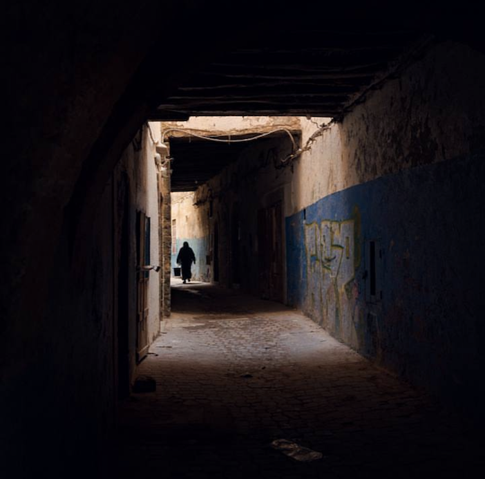
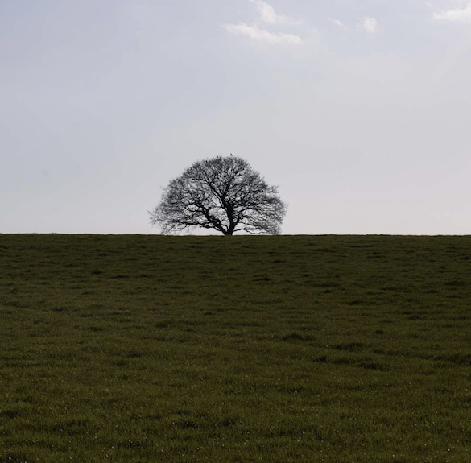
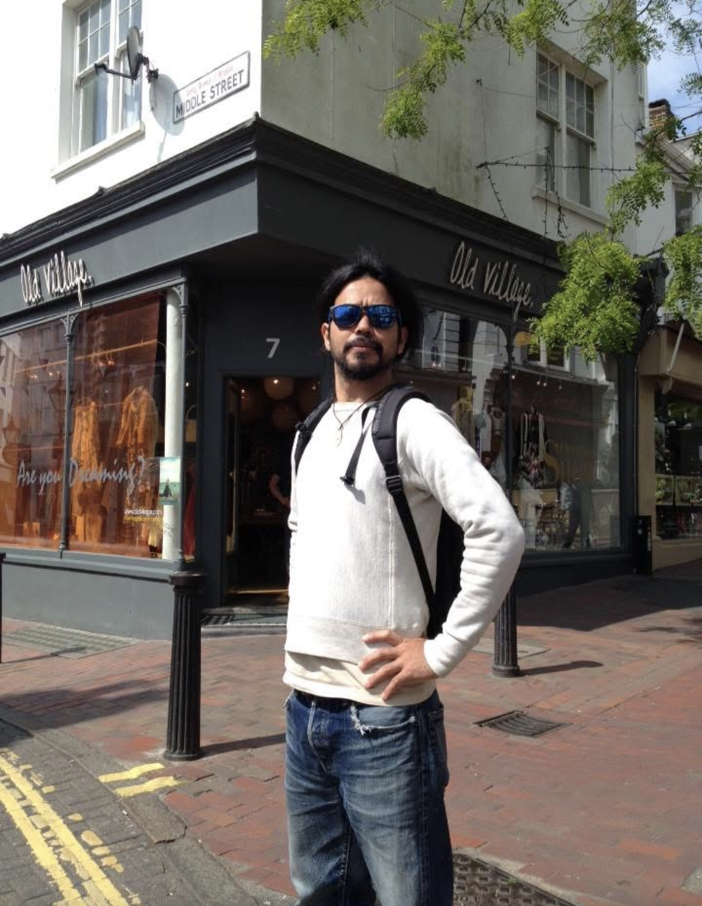

DOCUMENTARY & STREET
異国の街角、石畳に落ちる深い影。
行き交う人々の眼差しや、夕暮れに染まる路地裏。
光と影が織りなす圧倒的なドラマは、
世界の至る所に、静かに存在しています。
レンズを通して切り取るのは、飾らない人間の姿であり、
その土地が持つ固有の空気です。
名前も知らない誰かの人生が交差する瞬間を、
永遠に色褪せない記憶として刻み込みます。



1984年生まれ。沖縄を拠点に活動。
世界各地を旅しながら、ドキュメンタリー、ストリート、ポートレートを中心に撮影を行う。
文化の交差点や、名もなき人々の日常にレンズを向け、その土地固有の空気感をドラマチックな光と影で切り取るスタイル。
モノクロームの静謐さと、シネマティックな色彩美を自在に行き来し、一枚の写真から前後の物語を想像させるような作品を創作し続けている。